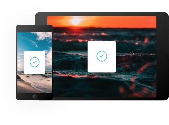

O histórico de tudo que você copia
Com o Clipboard, você acompanha e organiza tudo o que copia. Acesse sua área de transferência em todos os seus dispositivos.
Com o Clipboard, você acompanha e organiza tudo o que copia. Acesse sua área de transferência em todos os seus dispositivos.
O Clipboard salva na nuvem tudo o que você copia, permitindo que você acesse seus recortes imediatamente em todos os seus dispositivos. Nossos apps para Mac e iOS ajudam você a organizar tudo.

Encontre seus recortes por conteúdo, categoria, endereço da web, aplicativo e muito mais.
Salve e sincronize seus recortes instantaneamente em todos os seus dispositivos.
Recupere qualquer recorte desde o primeiro dia em que você começou a usar o app.
No computador ou onde você estiver, acesse todos os seus recortes do Clipboard com apenas alguns cliques.

As ferramentas certas para aumentar sua produtividade.

Exclua fontes específicas para impedir que informações confidenciais sejam salvas na área de transferência.

Remova a formatação indesejada do texto copiado para manter um visual consistente.

Visualize rapidamente todos os seus recortes no Clipboard para acessá-los com facilidade.


Disponível grátis na App Store. Baixe para Mac ou iOS, sincronize com o iCloud e comece a salvar seus recortes.